SAFARI
Users
Mallows - Family Malvaaceae & Others
Achiote
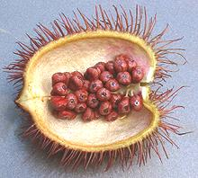 [Aploppas; Achiotl (Nahuatl); Bijol; Bija (Caribbean); Recado Rojo (Mexico); Atsuete (Philippines); pimentão doce (Spanish); Bixa orellana of family Bixaceae]
This tree is native to the tropical Americas and is used as a coloring
and flavoring (annatto) through much of tropical North America, Central
and South America and the Caribbean. It was taken by the Spanish to the
Philippines where it is quite popular, and used to a much lesser extent
in the rest of Southeast Asia and parts of India.
Details and Cooking.
Photo by Eric in SF distributed under license Creative
Commons
Attribution-Share Alike 3.0.
Baobab
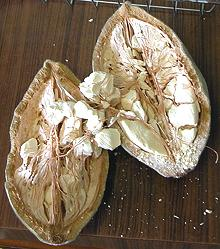 [Monkey Bread, Dead Rat Tree; Tabaldi (Sudan); Adansonia digitata of subfamily Bombacoideae]
Baobabs are one of the weirdest trees you'll ever see - often called the "upside down tree" because it looks planted root end up. Also called the "dead rat tree" since the mature fruit turns gray and looks like a rat hanging from its tail. The fruit ranges from spherical to cucumber shaped with a hard shell containing a sweet-sour pulp surrounding the seeds. The tree, which can be 30 feet in diameter, short or tall, is native to Africa but also grows in India and Australia, and as an ornamental in the US. Unfortunately, in Africa it is threatened by Global Warming.
Leaves are eaten as greens in Africa and the trunks are sometimes tapped for water. Cooking oil can be obtained by crushing the seeds, but it is not widely used. The fruit is the part most commonly used, for its sweet/tart flavor and very high vitamin C content. It is also high in calcium, antioxidants and dietary fiber. The pulp is eaten directly or as an ingredient in various drinks. Subst: Tamarind is the best substitute for the pulp.
As of 2015, baobab has been identified in North America as a
"superfruit" and an industry is developing to promote it. South Africa
is developing it as a crop to serve this industry. An interesting
feature is that the pulp dries completely in the pod before harvest, so
all the processor needs to do is mill it, no drying step. Initially, it
is being used in trail mixes and nutrition bars.
Photo by Alex Antener distributed under license
Creative Commons
Attribution-Share Alike 3.0.
Cacao Tree
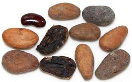 [Chocolate, Theobroma cacao]
This important mallow is native to the deep tropical forests of Central and South America. It grows in the form of a small tree (up to 26 feet tall), which produces flowers sprouting directly from the trunk and larger branches. These develop into pods 6 to 12 inches long, containing up to 60 seeds called "beans", embedded in a white pulp. The beans in the photo were typically 1.0 inch long, 0.57 inch wide and 0.27 inch thick.
The pulp is used locally to make juice, smoothies, jellys and the
like. The seeds are used to make Cocoa and Chocolate. Chocolate is
considered a magical medicinal by the ladies, an effective treatment
for PMS, depression and especially soured relationships. The split
bean in the left center shows the crumbly, very dark brown contents
of the bean, which tastes similar to dark bitter chocolate. These
beans were purchased from the Central American section of a large
Hispanic market in Los Angeles (Burbank) in a 6 ounce bag for 2016
US $11.97 / pound.
Chinese Chestnut
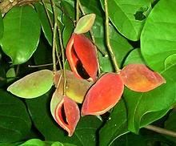 [Sterculia monosperma]
This tree originated in southern China and Taiwan, but is now a common
cultivated tree in northern Thailand, Laos and Vietnam, and mountainous
regions of Malaysia and Indonesia, parts of Burma. The thin shelled black
seeds, one or two to an orange-red pod, are about 3/4 inch long. The
kernel inside is yellow in color. They can be eaten raw or roasted or
boiled in the shell, or can be shelled and used as an ingredient in
recipes, They are important to the Chinese "Seven Sisters" festival.
Photo by Xufanc distributed under license Creative
Commons
Attribution-Share Alike 3.0 Unported.
Chocolateweed
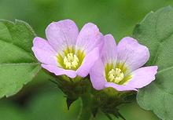 [Melochia corchorifolia]
This herabceous plant is found in tropical regions of Africa, Asia and
Australia, as well as in the United States from North Carolina to
Mississippi. It likes lightly shaded places and is a common weed in
cotton plantations, rice paddies and soybean fields. Leaves of this
plant are used as a potherb in western and southern Africa, as well as
India and Southeast Asia. They have a fairly high amount of protein,
are rich in minerals, including potassium, calcium and magnesium, and
contain a
little oil.
Photo by © 2010 Jee & Rani Nature Photography
distributed under license Creative Commons
Attribution-ShareAlike 4.0 International.
Chupa Chupa
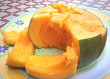 [South American Sapota, Zapote Chupa, Quararibea cordata of subfamily Bombacoideae]
Native to the rainforests of Brazil, Colombia, Ecuador and Peru,
this fruit is popular eaten out of hand where it grows, but is pretty much
unknown outside that region.
Photo by KLosma contributed to the public domain.
Cotton
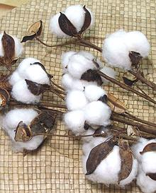 [Gossypium species of subtribe Malvoideae]
Cotton leaves are not considered suitable as food, but cotton seed oil
is important to the food processing industry. Originally used to make
soap, this oil is now the preferred feedstock for hydrogenation, a
process that makes fats solid at room temperature (Crisco, etc.). See
our Oils & Health article for the
full ramifications of this process. Cotton seeds contain a mild toxin
(gossypol) which has been used as a male contraceptive in China. We
trust this has been removed from Crisco. "New Crisco" does not use
partially hydrogenated oils (trans fats) but does use much safer fully
hydrogenated fats (saturated fats).
Cotton Tree
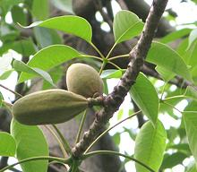 [Red Silk-Cotton, Red Cotton Tree; Bombax ceiba]
This tree, probably native to Southeast Asia, can grow to nearly 200 feet
in the tropics. It is now planted from eastern Pakistan through southern
China and on to Taiwan, Hong Kong, Malaysia and Indonesia. Flower cores
are used in northern Thailand as an essential ingredient in nam ngiao
spicy noodle soup and kaeng khae curry. In Hong Kong. elderly people are
sometimes seen gathering fallen flowers to dry for a kind of tea.
Photo by Forstbirdo distributed under license
Creative Commons
Attribution-Share Alike 3.0.
Cupuaçu
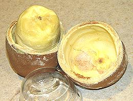 [Cupuacu, Cupuassu, Copoasu; Theobroma grandiflorum]
Native to the tropical rain forests of the Amazon Basin this tree bears fruits about 8 inches long and weighing 2 to 4 pounds. The pulp inside the thick hard exocarp is very fragrant and has been described as "banana bubblegum". The flavor is melon-like and has long been used in juices and deserts. The edible part is an aril surrounding the seeds.
This fruit has now been "discovered" by the health food industry which needs a steady stream of new exotic "superfruits" to promote at high prices. The juice is being sold for its anti-oxidant content.
The seeds can be used to make a form of chocolate, but commercial
exploitation has not yet been successful due to uneven quality of the
seeds. Photo by Christopher Hind distributed under license
Creative Commons
Attribution-Share Alike 3.0.
Dog's Balls
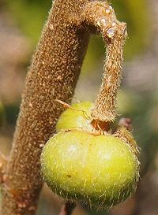 [Dog Nuts, Dysentery Bush, Emu-berry, Turkey Bush, Diddle Diddle; Grewia retusifolia]
Native to tropical Australia, this small shrub bears small sweet berries
which were important to the indigenous people, who also used the plant
medicinally. The fruit is 2 or 4 lobed, about 0.28 inch high and 0.47
inch wide, and brown and somewhat hairy when ripe.
Photo by Mark Marathon distributed under license Creative
Commons
Attribution-Share Alike 3.0.
Durian
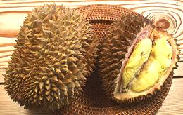 [Durio zibethinus of subfamily Helicteroideae]
The fruit that "tastes like Heaven and smells like Hell". Considered the "King of Fruit" in Southeast Asia, the spiny 4 to 10 pound fruits fetch a high price. In Thailand durians that have passed through an elephant (undigested) are particularly prized for their perfect ripeness. The photo specimens, purchased in an Asian market in Los Angeles, were previously frozen - fresh ones are easily available but cost 5 times as much.
The Durian is divided into 5 compartments, each with a large seed surrounded by a creamy pale yellow pulp, the part you eat, and the part that stinks. A compilation of descriptions would come up with something like "over-ripe Limburger cheese with overtones of fermenting onions and rotting fish". Others say it smells like a sewer, and some say "It's really not that bad". All who get past the smell say it tastes wonderful.
Selecting a durian is a difficult process. If a squirrel has bored into it it's probably good, but you should demand a discount. You should be able to detect an odor, but not too much. No odor means it's not ripe. Shaking it you should detect some movement inside, but not much. A heavy fruit with no movement at all means unripe. A lighter fruit with a little movement is what you want. A lot of movement or any cracks means it's overripe. Watch for worm holes in any case and don't buy wormy ones.
Caution: Durians can kill. You don't want to hang around under
durian trees as the fruit is hard and heavy and high enough to kill you
when it falls, and durians attract tigers who may be more interested in
meeting you than you are in meeting them.
Gongura / Kenaf
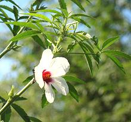 [Sour Leaf, Decan Hemp, Java Jute, Kenaf (English); Hanf (Persian); Gongura, Pulicha Keerai Ambaadi, Mesta, Shougri (India); Teel, Til, Teal (North Africa); Dah, Gambo, Rama (West Africa); Papoula-de-são-francisco, Cãnhamo-brasileiro, Quenafe (Brazil); Cáñamo de la India, Cáñamo de gambo, Cáñamo Rosella, Pavona encendida, Yute de Java, Yute de Siam de gambo, Pavona encendida, Yute de Java, Yute de Siam (Spanish); and many, many more; Hibiscus cannabinus]
This plant, probably originating in South Asia, is cultivated worldwide for many uses: rope fiber, paper, edible leaves, oil, animal feed and bedding, fiberboard, engineered wood and thread for fabrics. The ancient Egyptians used it to make the ropes and sails for their ships. It can grow to about 11 feet tall with stems up to 1 inch diameter. Currently small crops are grown in California, Texas and Louisiana, mostly for animal feed and bedding, but you can expect it to expand as more of its uses are exploited, particularly if hemp remains illegal in the US (hemp has similar fibrous properties but is not related).
The leaves are widely eaten in India, and preferred to the leaves of
Roselle, but I haven't seen this plant here in Southern California. The
seeds are pressed for cooking oil, which has a very similar fatty acid
profile to Cottonseed Oil, but with more Omega 3. It is commonly called
Gongura for culinary uses and Kenaf for industrial and fiber uses. This
plant is closely related to the smaller, red stemmed
Roselle / Gongura (Hibiscus
sabdariffa), but has green stems and much different fruit pods.
Roselle has wider culinary and medicinal usege.
Details and Cooking.
Photo by Darendrojit (cropped) distributed under license
Creative Commons
Attribution-ShareAlike v3.0 Unported.
Kapok / Silk Cotton Tree
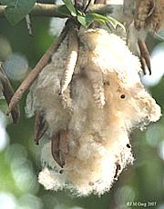
[Java Cotton; Marathi Moggu (flower buds, Maharashtra); Ceiba pentandra]
Native to the tropical Americas, this mallow is now grown commercially
in Southeast Asia, especially for the fiber from mature fruits. The trees
also figure in production of honey, and dried flower buds are used in parts
of India as a spice. For details see Kapok /
Marathi Moggu. The bark of the tree is used medicinally. An oil can
be pressed from the seeds for use in making soap. It can also be used as
cooking oil, but becomes rancid very quickly. The fibers from mature pods
have long been used as stuffing for life jackets, pillows, mattresses
and as a substitute for down. The fiber is buoyant and water resistant
but rather flammable.
Photo by J.M.Garg distributed under license Creative
Commons
Attribution-Share Alike 3.0.
Kapok / Red Cotton Tree
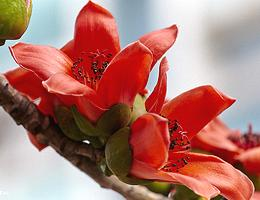 [Lepan bwin, Let-pan (flowers, Burma); Bombax ceiba]
Native to tropical Asia, this mallow is widespread in India, Southeast Asia
and southern China. In India the fibers from the mature fruits are
used for fabrics and pillow stuffing. The flowers, fresh or dried, and
flower buds, fresh or dried, have various culinary uses in Burma, Thailand
India and southern China. The tree also figures in production of honey. For
details see Kapok / Red Cotton
Tree .
Photo by Tlong Zhuhai distributed under license
Creative Commons
Attribution-ShareAlike v3.0 Unported.
Kola Nut
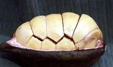 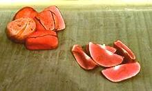 [Bissy (Caribbean); Cola acuminata and Cola nitida]
This tree, which grows to 85 feet high, is native to the rain forests of Africa, particularly in Zimbabwe (DR of the Congo). The sweet smelling pods, about 8 inches long, are tightly packed with about 12 seeds in white shells. The shells are broken to remove the red kernels, which easily split into two halves.
These kernels contain about 2% of a kind of
caffeine. The seed are chewed raw, in which case they start out a little
bitter but sweeten as they are chewed, or they can be boiled to extract
the Cola flavor and caffeine which are used to flavor some beverages.
Of course, Coca-Cola, which originally contained both cocaine and cola,
now contains neither, and other commercial "cola" drinks also contain
no cola.
Photo by Bob Walker contributed to the Public Domain
.
Linden
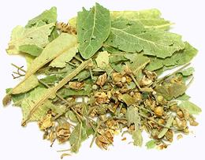 [Lime Tree, Basswood; Tilia cordata T. platyphyllos (Europe); Tilia americana (North America)]
Native to Europe, Western Asia and Northeastern North America, this tree can grow to over 100 feet tall. Young leaves are eaten as a green, but the main uses for this tree are medicinal. The tea promotes sweating and is used for fevers, also for colds and other respiratory problems. It is also held effective for relieving anxiety. Wood and bark are also used medicinally.
Linden flowers are very aromatic. They are dried for use in making
therapeutic teas. While the normal leaves of the linden are broad and heart
shaped, the flowers and fruit are associated with long, narrow leaves called
"bracts". These are usually included with the dried blossoms
in commercial packaging.
Mallow
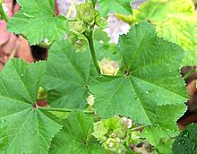 [Common Mallow, Cheese plant, Malva neglecta (North America), Malva silvestris (Europe), Malva parviflora]
This common weed grows just about everywhere in North America in the
Spring. The leaves are edible and can be used in salads. Green seed
wheels are also edible and often picked and eaten by children. The seed
wheels resemble tiny wheels of cheese, hence the name "cheese plant".
Malva Nut
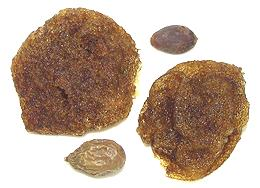 [Poontalai, Pangdahai (China); Pontalai (package labeling); Samrong; Hat luoi uoi, Duoi uoi (Viet); Mak chong, Sterculia lychnophora of subfamily Sterculioideae]
The dried fruits of this tree, native to Southeast Asia and China, are boiled, at which they foam up to about 8 times their previous volume. The seeds are then removed and the gelatinous mass is used in various cold drinks (in Southeast Asia) and cold soups and tea (in China). In Vietnam, Thailand and Cambodia the drinks often also contain basil seeds, which also expand greatly when boiled. The photo shows a dried fruit (bottom left) a seed (top right) and two expanded fruits with seeds removed. Dried fruits are about 1 inch long by 0.6 inch diameter while expanded size may vary.
These seeds also have significant medicinal properties. It is recommended
never to boil more than three seeds per drink as over-consumption may result
in watery phlegm, nausea, coughing and swollen tongue..
Marshmallow
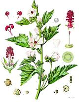 [M. Althaea officinalis]
Probably native to Africa, this herb is used as food and as a medicinal
plant through Europe, Anatolia and Caucasus. Extract from the roots
was once used to make the confection that still bears its name. It is
closely related to the Common Mallow which is sometimes mistaken for it
but the Marshmallow leaf shape is pointier and the mucilaginous
properties are much stronger. The leaves are edible.
Illustration by Franz Eugen Kohler for Kohler's
Medizinal-Pflanzen - copyright expired.
Molokhia
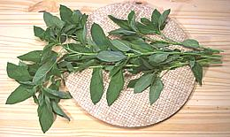 [Jew's Mallow, Egyptian Spinach, Okra Leaf, Mallow Leaf; Saluyot (Philippine); Molokhia, Mulukhiyah (Arab); Malta Sag (India); Bai po (Thai); T. Corchorus olitorius (Middle East, Africa, South & Southeast Asia) | Corchorus capsularis (Japan, China), both of subfamily Grewioideae]
Fiber of mature molokhiya plants is known as Jute, but for use as food the plant is picked young and cooked as greens. As the most important green in Egyptian cooking it's available frozen in stores serving Middle Eastern communities and in season fresh in Southern California, sold as "Okra Leaf". In Egypt leaves are also dried (they are thin and dry quickly) and are crumbled into a powder for use.
The leaves are quite mucilaginous when cooked. Most Americans would
consider them "slimy", but in the Middle East the effect is much liked.
They are high in betacarotene, iron, calcium, vitamin C and antioxidants.
Details & Cooking.
Money Tree
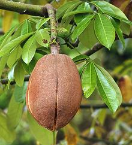 [Malabar chestnut, Guiana chestnut, Provision tree, Saba nut; Monguba (Brazil); Pumpo (Guatemala); Pachira aquatica | Pachira glabra]
These plants can be found in a vast number of Chinese businesses and for sale in practically any market serving a Chinese community, usually several plants with their trunks braided together. They are supposed to bring good financial luck. Allowed to grow large (and I'm sure they would rather not be braided together), they produce brown fruit pods up to 12 inches long and 2.5 inches in diameter. These contain edible seeds which can be eaten raw or roasted and taste similar to chestnuts. They may also be ground and used to make a hot beverage.
Note: don't try to start a plantation with plants purchased from
Chinese markets - they are supposed to be P. aquatica but many,
even most, are actually P. glabra which grows a thick base faster,
but produces only 6 inch green pods with smaller seeds.
Photo by Hans Hillewaert distributed under license Creative
Commons
Attribution-Share Alike 3.0 Unported.
Musk Okra
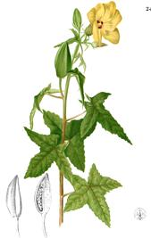 [Musk mallow, Musk seeds, Rose Mallow, Abelmoschus moschatus of subfamily Malvoideae]
Native to India, this mallow is also found in Southeast Asia,
including the Philippines. In the region seeds are added to coffee. Unripe
pods, leaves and new shoots are used as a vegetable. Seeds are also used
in the formulas of several herbal liqueurs, including Benedictine. It
also has a number of medicinal uses, and is used for sizing in paper
making. The flowers are sometimes used to flavor tobacco.
Drawing from Flora de Filipinas, copyright expired.
Muntingia
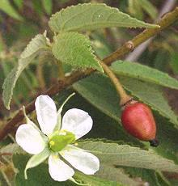 [Jamaican cherry, Panama Berry, Singapore Cherry, Strawberry Tree; Bolaina, Yamanaza, Cacaniqua, Capulin Blanco, Nigua, Riguito, Memizo, Memiso (Spanish); Kersen (Indonesia); Ceri Kampung (Malaysia); Aratilis, Aratiles, Manzanitas (Filipino); M. Muntingia calabura of family Muntingiaceae]
Native to the tropical Americas and as far
south as Bolivia, this tree is now grown in Southeast Asia and parts of
India. The small fruits grow to a little over 1/2 inch and are very well
liked through its range. They are very sweet and said to taste like
cotton candy. Only in Malaysia are they harvested for commercial sale,
everywhere else they are just foraged, mainly by children.
Photo by Jim Conrad contributed to the public domain.
Okra
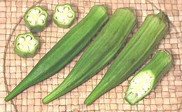 [Okra (US from West African); Lady's fingers (Brit); Bhindi (India); Gumbo (US South - from Bantu); Abelmoschus esculentus, formerly Hibiscus esculentus of subfamily Malvoideae]
Originally from Ethiopia, this mallow was carried as far as India and perhaps Southeast Asia by Arab traders. It spread through much of Africa and came to the US. with the slave trade. Okra is now grown world wide and is particularly important in the US South, Africa, the Middle East and India. The photo specimens were up to 5 inches long by 1 inch in diameter, about as large as you'd want them.
In African, Middle Eastern and Southern US cooking okra is valued for it's mucilaginousness (sliminess) which adds body to broths and sauces, but in other parts of the world, India, for example, cooking methods are designed specifically to suppress this characteristic.
Okra pods are also sold dried and pickled. Okra Leaves are used in
African cooking, but what is sold as "Okra Leaves" in Southern California
is a different mallow, Molokhia. Seeds from
mature okra pods are pressed for oil in some regions and roasted seeds
were used as a substitute for coffee for plantation slaves during the
American Civil War. For those who fondly remember eating the seed wheels
of Common Mallow as children, the taste can
be recaptured in more convenient form by eating okra pods raw.
Details & Cooking
Peanut Tree
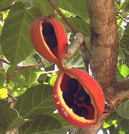 [Red-fruited Kurrajong, Orange-fruited Kurrajong; Sterculia quadrifida]
This tree, up to 32 feet high, is native to rainforests of Queensland and
New South Wales in Australia. The seed pods, orange on the outside and
red or orange on the inside, contain up to 8 black seeds which are edible
and taste like raw peanuts.
Photo by Ethel Aardvark distributed under license Creative
Commons
Attribution-Share Alike 3.0 Unported.
Phalsa
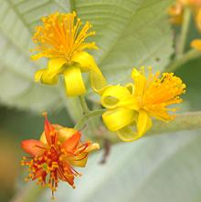 [Falsa; Grewia asiatica]
This shrub or small tree, to 26 feet tall, is native from Pakistan to
Cambodia and has been introduced to other tropical countries. It is
extensively cultivated for its sweet-sour fruit, which is between 0.2
and 0.5 inches diameter and is dark purple or black when ripe. It has
become naturalized and a bit invasive in the Philippines and Australia.
This plant is also used medicinally.
Photo by Asit K. Ghosh distributed under license Creative
Commons
Attribution-Share Alike 3.0 Unported.
Roselle / Gongura
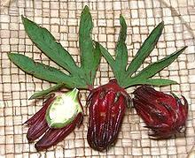 [Sour Leaf, Red Sorrel (English); Rosella (Australia, Indonesia); Belchanda (Nepal); Tengamora, Mwitha (Assam, India); Chukor, Gongura, Pulicha Keerai, Pundi, Ambadi, LalChatni, Kutrum, Mathipuli (India); Chin baung (Burma); KraJiabDaeng (Thailand); Chaye-Torosh (Iran), Karkade (Arabic); Sorrel (Caribbean & Latin America); Flor de Jamaica (Mexico); Guragod, Labug, Labog (Philippines); Bissap (Africa); Hibiscus sabdariffa]
This plant is closely related to the taller, green stemmed Gongura / Kenaf (Hibiscus cannabinus) but Kenaf fruit pods are very different in structure. Like Kenaf, Roselle is primarily a fiber crop, growing to 8 feet tall, but also has a wide variety of culinary and medicinal uses.
The leaves are a very important herb or vegetable in a good part of India (Andhra, Karala, Karnataka, Assam and others), and valued for their iron content. They are used in a wide variety of pickles, dals and curries, particularly goat and mutton curries, but also with chicken and pork. They are also much used in Burma, especially with fish and shellfish, and in Africa, particularly Senegal, where they flavor a recipe for fish and rice.
The deep red calyx surrounding the fruit pod is also widely used.
When dried, it is commonly known as "Jamaica" or "Hibiscus" and is
much used worldwide for herb teas, cold drinks, jams and medicinals.
Details and Cooking
Wax Mallow
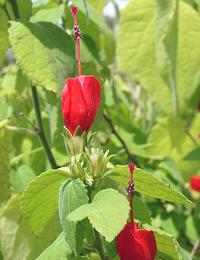 [Turkcap, Turk's Turban, Ladies Teardrop, Scotchman's Purse; Malvaviscus arboreus]
This tree-like shrub is native to the southeast United States, Mexico,
Central America and South America. Both fruit and flowers are used to
make herbal teas. The fruit can be used to make jelly or syrup.
Photo by
Forest & Kim Starr distributed under license Creative Commons
Attribution-Share Alike 3.0, Attribution Required, notification
appreciated.